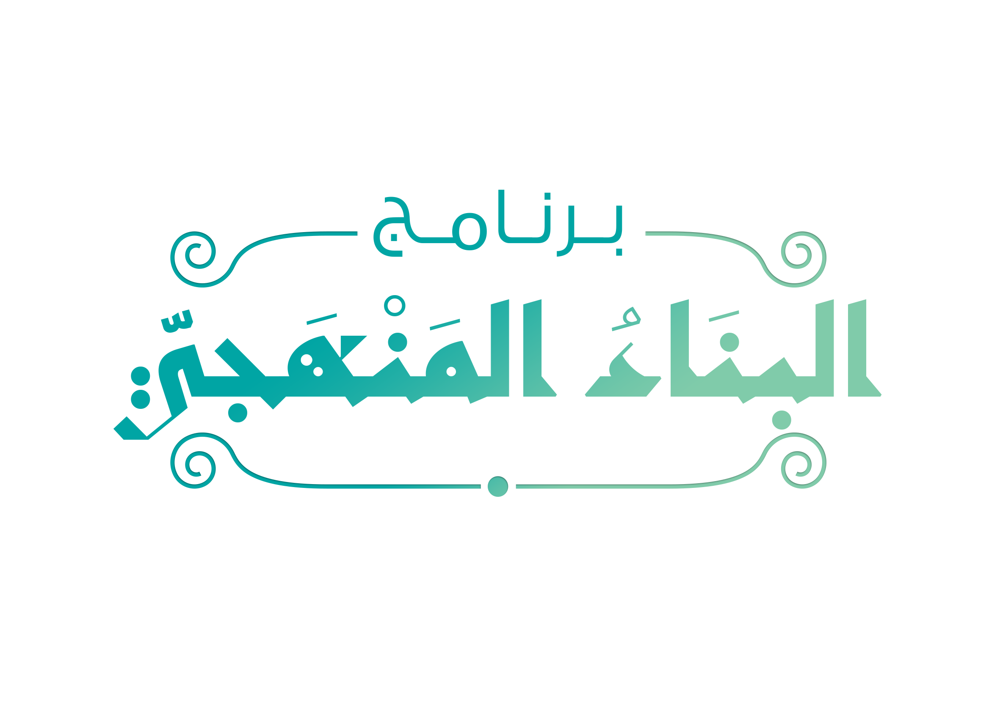

أثر مساحة تُعرض فيها تجارب وآراء الطلبة حول البرامج التعليمية الإلكترونية الشرعية التي يُشرف عليها الشيخ أحمد السيد.

البناء المنهجي
برنامج شرعي معرفي بنائي إلكتروني، يجمع بين التأصيل الشرعي والثقافة الإسلامية، يهدف إلى بناء المسلم بناءً شرعيًا قويمًا ويعينه على تجاوز الشتات المعرفي.